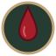

DSA – Token-Status
Wundmarker für Owlbear Rodeo (DSA 4.1). Wähle ein Charakter-Token und setze 0, 1, 2 oder 3 Wunden direkt über das Kontextmenü.
Zur Installation den folgenden Link in deinem Owlbear-Rodeo-Profil unter Add Extension einfügen:
Die Extension läuft nur innerhalb von Owlbear Rodeo. Die Änderung der Wundenzahl ist dem GM vorbehalten.